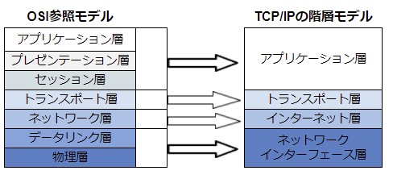

TCP/IPを一言で表すとインターネット通信で標準的に利用されている通信プロトコルです。
TCP/IPは米ARPANETのプロジェクトから生まれたプロトコル群
インターネットプロトコルスイートとも呼ばれている。
※プロトコルスイートとは通信プロトコルの詰め合わせのこと
TCP/IPの階層モデルは以下の４階層で構成されている。
上から
- アプリケーション層
- トランスポート層
- インターネット層
- ネットワークインターフェース層(またはネットワークアクセス層)
TCP/IPは複数のプロトコルで構成されているが、その中でも通信で中心的な役割を果たす「TCP」と「IP」からTCP/IPと呼ばれる。
※TCPとIPの他には、「DHCP」「DNS」「FTP」「HTTP」「SSH」などがある
OSI参照モデルとの関係
コネクション型のプロトコルで、「Transmission Control Protocol」の略
相手に確実にデータが届いたか確認し、データの欠落などがあれば再送するという制御を行なう。
信頼性は高いが、転送効率は低く、通信状況が悪いと遅延が生じたり通信不能になりやすい。
TCP/IPのトランスポート層に属している。
通信の種類は以下の通り
- コネクション型通信ー－ー－通信開始前に相手との間で仮想的な通信路を確保する通信方式
つまり相手と接続出来ているか確認してから通信を行なう。 - コネクションレス型通信ー－通信開始前に相手との間で事前のやり取りをしない通信方式
つまり相手と接続できているか確認せず、いきなりデータを送信する。
UDPはこの方式を用いている。
「Internet Protocol」の略
簡単に言えばIPアドレスを割り当て、これをもとに通信を行なうプロトコル
TCP/IPのインターネット層に属している。
IPアドレスとは
IPアドレスには２つ種類がある
- グローバルIPアドレスー－ー世界にただひとつしかないIPアドレス。「ICANN」という組織で世界的に管理され、日本の管理組織「JPNIC」に割り振られて使用されている。
- プライベートIPアドレスー－自宅や会社など特定のネットワークの範囲内で用いられるIPアドレス。そのネットワーク内で識別できれば良いので、他のネットワークと重複している可能性がある。
ローカルIPアドレスとも呼ばれる。
イメージ画像としてはこんな感じ

TCP/IPはこのふたつのプロトコルが中心となっている通信プロトコルのセット
ネットワークインターフェース層(１層)
リンク層やデータリンク層と呼ぶこともある。
ここでは同一のネットワーク内におけるデータ転送を担っている。
OSI参照モデルの
第１層：物理層
第２層：データリンク層
に相当する部分
インターネット層(２層)
ここではネットワーク間を相互に通信させる機能・役割を担っている。
つまり、データを最終的な目的地まで送り届ける役割
OSI参照モデルの第３層：ネットワーク層に相当する部分
トランスポート層(３層)
データを適切なアプリケーションに振り分ける役割
つまりノード間のデータ通信の信頼性を担保する役割。この層にTCPとUDPが存在する。
OSI参照モデルの第４層：トランスポート層に相当する部分
アプリケーション層(４層)
ここではアプリケーションで扱うデータのフォーマットや手順を決める役割
つまり「0」「1」のデータを人が理解できる表現形式(文字コードや画像などの形式)に変換する役割
OSI参照モデルの
第５層：セッション層
第６層：プレゼンテーション層
第７層：アプリケーション層
に相当する部分
インターネットの世界で標準的に利用されているプロトコルのセット
その中でもTCPとIPが中心となっているのでTCP/IPと名づけられた。
ちなみにISO(国際標準化機構)により策定されたOSI参照モデルは、 現在はほとんど使われておらず概念として生き残る事になった。
以下参考ページ
- https://it-biz.online/it-skills/tcp-ip/#toc4 ←特にお世話になった。
- https://wa3.i-3-i.info/word1540.html
- https://medium-company.com/tcp-ip/
- https://ja.wikipedia.org/wiki/%E3%82%A4%E3%83%B3%E3%82%BF%E3%83%BC%E3%83%8D%E3%83%83%E3%83%88%E3%83%BB%E3%83%97%E3%83%AD%E3%83%88%E3%82%B3%E3%83%AB%E3%83%BB%E3%82%B9%E3%82%A4%E3%83%BC%E3%83%88#%E3%82%A4%E3%83%B3%E3%82%BF%E3%83%BC%E3%83%8D%E3%83%83%E3%83%88%E3%83%BB%E3%83%97%E3%83%AD%E3%83%88%E3%82%B3%E3%83%AB%E3%83%BB%E3%82%B9%E3%82%A4%E3%83%BC%E3%83%88%E3%81%AE%E9%9A%8E%E5%B1%A4
- https://www.infraexpert.com/study/
- https://e-words.jp/w/TCP.html
- https://time-space.kddi.com/ict-keywords/20200930/2984
- https://www.itmanage.co.jp/column/tcp-ip-protocol/